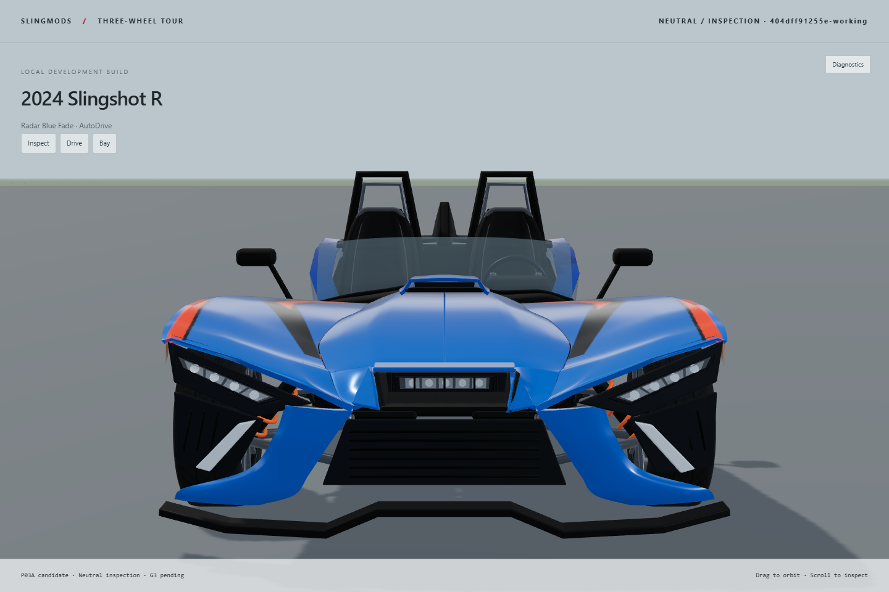
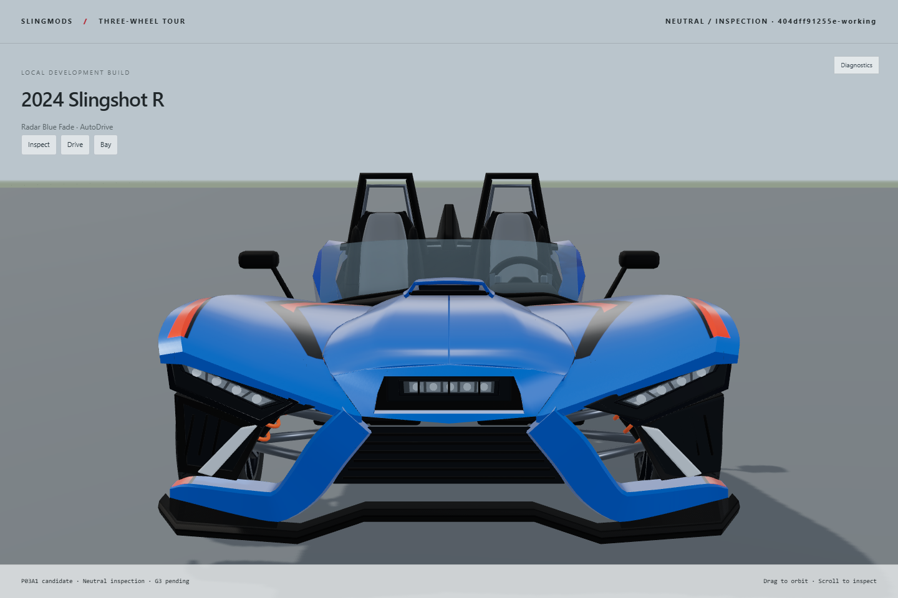
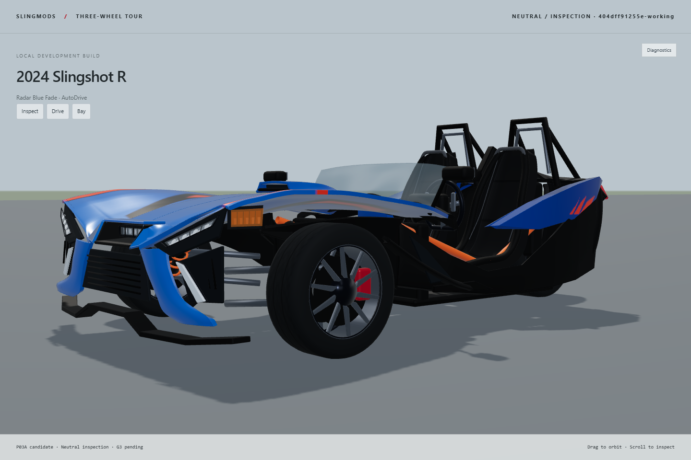
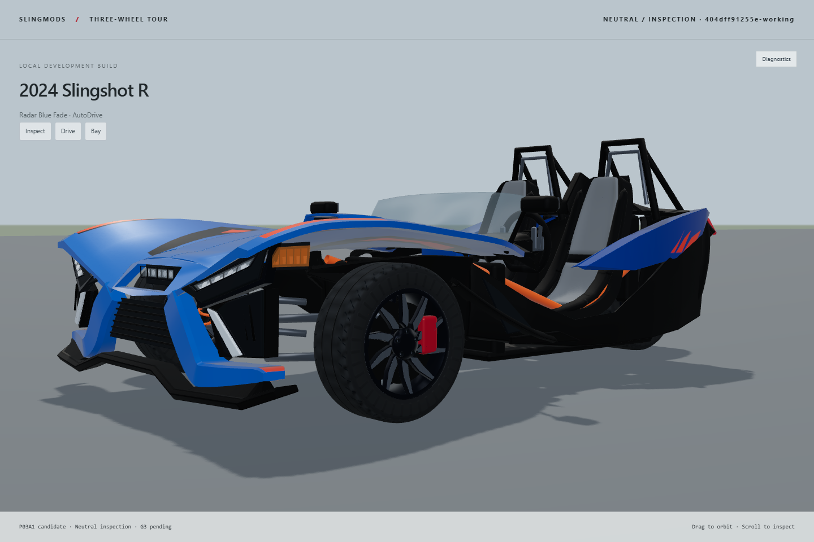
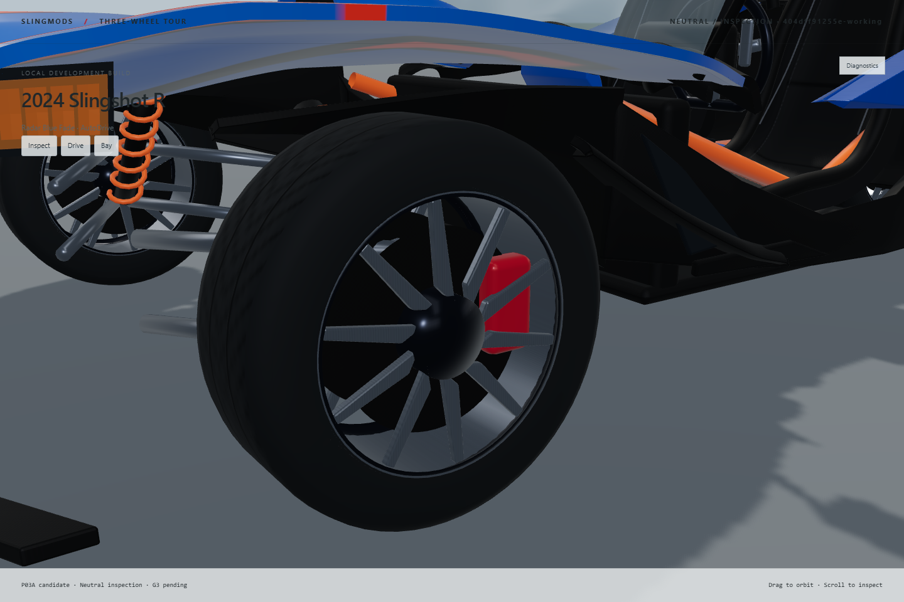
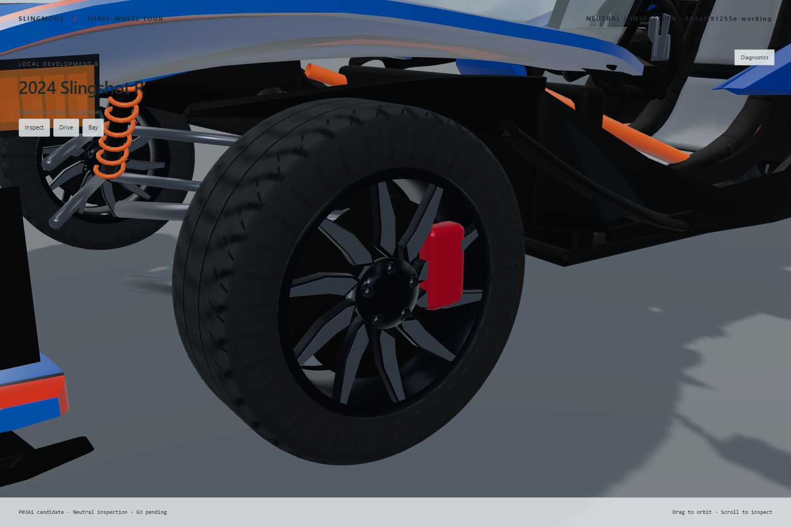
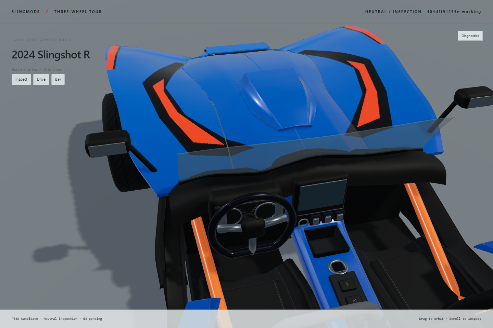
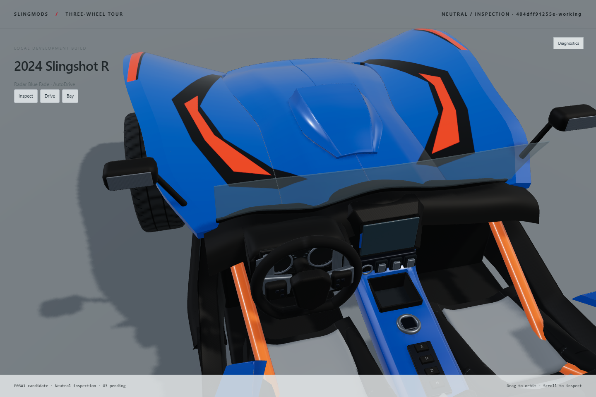
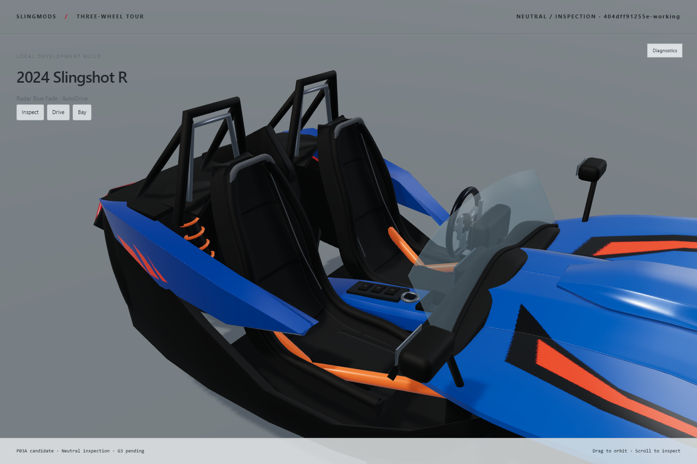

Left: preserved Review02 P03A asset. Right: P03A1 candidate. Both are actual runtime captures; source hashes and camera parameters accompany each capture folder. These comparisons isolate candidate geometry/material changes under the same rig, and do not present old footage as a current build.
Exact-year research references: fae0_l.jpg (front), d2cd_l.jpg (three-quarter), 3f60_l.jpg (wheel), 95c0_l.jpg and deda_l.jpg (cockpit). See reference-cameras.json for approximate landmarks and perspective uncertainty. Original photographs remain research-only in the full workspace.
Front fascia

P03A baseline geometry and maps, recaptured under the current neutral rig and same camera.

P03A1 candidate in the same rig and camera.
Front three-quarter

P03A baseline geometry and maps, recaptured under the current neutral rig and same camera.

P03A1 candidate in the same rig and camera.
Wheel and tire

P03A baseline geometry and maps, recaptured under the current neutral rig and same camera.

P03A1 candidate in the same rig and camera.
Steering, dashboard and graphics

P03A baseline geometry and maps, recaptured under the current neutral rig and same camera.

P03A1 candidate in the same rig and camera.
Seat panels and bolsters

P03A baseline geometry and maps, recaptured under the current neutral rig and same camera.